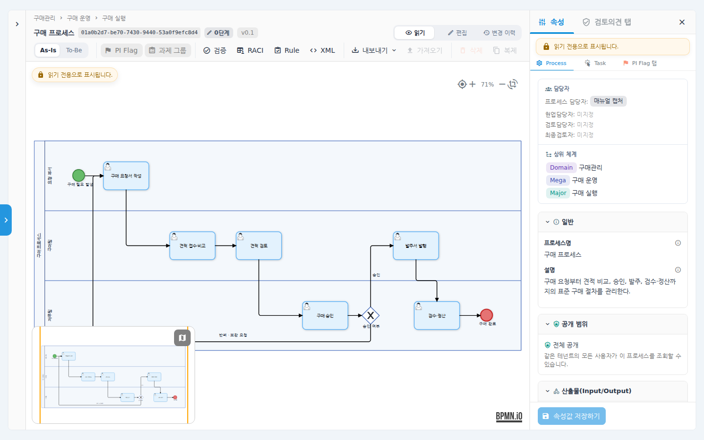
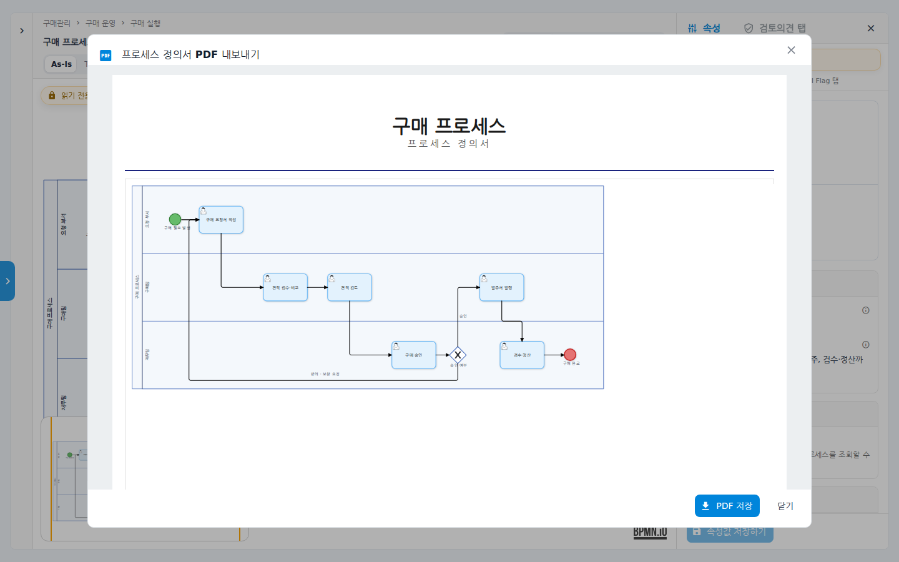
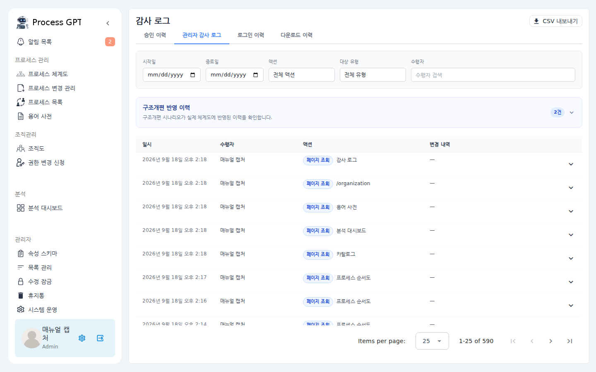
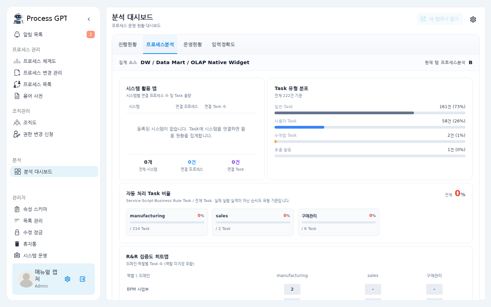
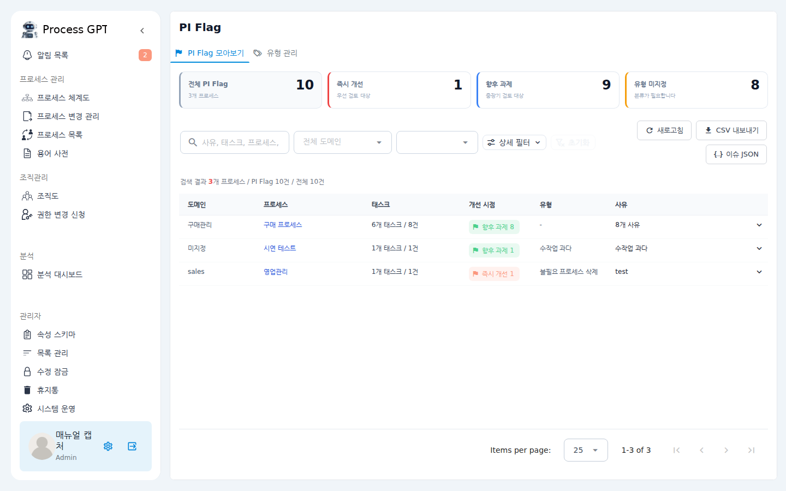

<title>uEngine PAL</title>
<meta charset="utf-8">
<meta name="viewport" content="width=device-width, initial-scale=1">
<meta name="description" content="uEngine PAL(Process Asset Library) — 프로세스 규정서를 살아있는 데이터로 바꾸는 전사 프로세스 자산 라이브러리. AI 없이도 완결되고, 켜면 더 빨라집니다.">
<link rel="preconnect" href="https://fonts.googleapis.com">
<link rel="stylesheet" href="https://fonts.googleapis.com/css2?family=Noto+Serif+KR:wght@600;700;900&family=IBM+Plex+Sans+KR:wght@400;500;700&family=IBM+Plex+Mono:wght@400;500&display=swap">
<style>
  :root{
    --ink-deep:#0D1B2A;
    --ink:#16283C;
    --ink-line:#24405E;
    --accent:#3E8EE8;
    --accent-bright:#4DA3FF;
    --amber:#D98A2B;
    --paper:#F5F8FC;
    --card:#FFFFFF;
    --line:#D9E3EF;
    --text:#1F2D3D;
    --muted:#5B6C80;
    --text-inv:#EAF1F9;
    --muted-inv:#8FA6C0;
    --serif:'Noto Serif KR',ui-serif,serif;
    --sans:'IBM Plex Sans KR',-apple-system,'Malgun Gothic',sans-serif;
    --mono:'IBM Plex Mono',ui-monospace,monospace;
  }
  *{box-sizing:border-box}
  html{scroll-behavior:smooth}
  @media (prefers-reduced-motion: reduce){html{scroll-behavior:auto}}
  body{
    margin:0;background:var(--paper);color:var(--text);
    font-family:var(--sans);font-size:17px;line-height:1.75;
    -webkit-font-smoothing:antialiased;
  }
  img,video{max-width:100%;display:block}
  a{color:var(--accent)}
  .wrap{max-width:1080px;margin:0 auto;padding:0 24px}
  .eyebrow{
    font-family:var(--mono);font-size:13px;letter-spacing:.18em;
    color:var(--accent);text-transform:uppercase;margin:0 0 14px;
  }
  h1,h2,h3{font-family:var(--serif);text-wrap:balance;margin:0}
  h2{font-size:clamp(26px,3.4vw,36px);font-weight:900;line-height:1.35}
  h3{font-size:20px;font-weight:700;line-height:1.45}
  p{margin:0}
  section{padding:88px 0}
  .lead{max-width:640px;color:var(--muted);margin-top:18px}
  .btn{
    display:inline-block;padding:13px 26px;border-radius:6px;
    font-weight:700;font-size:16px;text-decoration:none;line-height:1.4;
  }
  .btn:focus-visible,a:focus-visible,summary:focus-visible{outline:3px solid var(--accent-bright);outline-offset:2px}
  .btn-primary{background:var(--accent);color:#fff}
  .btn-primary:hover{background:var(--accent-bright)}
  .btn-ghost{border:1px solid var(--ink-line);color:var(--text-inv)}
  .btn-ghost:hover{border-color:var(--accent-bright);color:var(--accent-bright)}
  .shot{
    border:1px solid var(--line);border-radius:8px;overflow:hidden;
    background:var(--card);box-shadow:0 10px 34px rgba(13,27,42,.09);
  }
  .caption{font-size:13.5px;color:var(--muted);margin-top:10px;font-family:var(--mono)}

  /* ---------- Hero ---------- */
  .hero{background:var(--ink-deep);color:var(--text-inv);padding:96px 0 72px}
  .hero-logo{height:38px;width:auto;background:#fff;padding:10px 18px;border-radius:10px;margin-bottom:26px;box-shadow:0 6px 22px rgba(0,0,0,.28)}
  .hero .eyebrow{color:var(--accent-bright)}
  .hero h1{
    font-size:clamp(34px,5.2vw,58px);font-weight:900;line-height:1.3;
    color:#fff;max-width:760px;
  }
  .hero h1 em{font-style:normal;color:var(--accent-bright)}
  .hero .sub{max-width:620px;color:var(--muted-inv);margin-top:22px;font-size:18px}
  .hero .cta{display:flex;gap:14px;flex-wrap:wrap;margin-top:34px}
  .hero-badge{
    display:inline-flex;align-items:center;gap:8px;margin-top:30px;
    border:1px solid var(--ink-line);border-radius:100px;padding:7px 16px;
    font-size:14px;color:var(--muted-inv);
  }
  .hero-badge b{color:#fff;font-weight:500}
  .hero-badge .dot{width:7px;height:7px;border-radius:50%;background:var(--amber)}
  .promo{margin-top:56px}
  .promo video{
    width:100%;border-radius:10px;border:1px solid var(--ink-line);
    box-shadow:0 24px 70px rgba(0,0,0,.45);
  }

  /* ---------- 문제 정의 ---------- */
  .pains{display:grid;grid-template-columns:repeat(2,1fr);gap:22px;margin-top:44px}
  .pain{background:var(--card);border:1px solid var(--line);border-radius:8px;padding:28px}
  .pain h3{margin-bottom:12px}
  .pain p{font-size:15.5px;color:var(--muted)}
  .pain .k{font-family:var(--mono);font-size:12.5px;color:var(--amber);letter-spacing:.14em;display:block;margin-bottom:14px}

  /* ---------- 도입 효과 ---------- */
  .effects{background:var(--card);border-top:1px solid var(--line);border-bottom:1px solid var(--line)}
  .effect-grid{display:grid;grid-template-columns:repeat(2,1fr);gap:22px;margin-top:44px}
  .effect{display:flex;gap:18px;padding:28px;border:1px solid var(--line);border-radius:8px;background:var(--paper)}
  .effect .ic{flex:none;width:36px;height:36px;border-radius:9px;background:rgba(62,142,232,.12);color:var(--accent);display:flex;align-items:center;justify-content:center;font-weight:700;font-size:19px}
  .effect h3{font-size:18px;font-family:var(--sans);line-height:1.4}
  .effect .en{font-family:var(--mono);font-size:12px;color:var(--muted);letter-spacing:.06em;display:block;margin:5px 0 10px}
  .effect p{font-size:14.5px;color:var(--muted)}

  /* ---------- 6가지 요약 ---------- */
  .six{background:var(--card);border-top:1px solid var(--line);border-bottom:1px solid var(--line)}
  .six-grid{display:grid;grid-template-columns:repeat(3,1fr);gap:34px 40px;margin-top:48px}
  .six-item{border-top:2px solid var(--accent);padding-top:18px}
  .six-item h3{margin-bottom:10px}
  .six-item p{font-size:15.5px;color:var(--muted)}

  /* ---------- 데모 투어 ---------- */
  .tour-part{
    display:grid;grid-template-columns:5fr 6fr;gap:56px;align-items:center;
    padding:64px 0;border-top:1px solid var(--line);
  }
  .tour-part:first-of-type{border-top:0}
  .tour-part.flip .tour-media{order:-1}
  .part-no{
    font-family:var(--mono);font-size:13px;color:var(--accent);
    letter-spacing:.18em;margin-bottom:14px;display:block;
  }
  .tour-part h3{font-size:24px;font-weight:900;font-family:var(--serif)}
  .tour-part .body{margin-top:16px;color:var(--muted);font-size:16px}
  .tour-part blockquote{
    margin:20px 0 0;padding:14px 20px;border-left:3px solid var(--amber);
    background:var(--card);border-radius:0 8px 8px 0;
    font-size:15px;color:var(--text);
  }
  /* ---------- 거버넌스 ---------- */
  .gov{background:var(--card);border-top:1px solid var(--line);border-bottom:1px solid var(--line)}
  .gov-grid{display:grid;grid-template-columns:repeat(3,1fr);gap:22px;margin-top:44px}
  .gov-card{border:1px solid var(--line);border-radius:8px;padding:26px;background:var(--paper)}
  .gov-card h3{font-size:17.5px;font-family:var(--sans);margin-bottom:10px}
  .gov-card p{font-size:14.5px;color:var(--muted)}
  .gov-card .k{font-family:var(--mono);font-size:12px;color:var(--accent);letter-spacing:.12em;display:block;margin-bottom:12px}
  .gov-shots{display:grid;grid-template-columns:1fr 1fr;gap:22px;margin-top:34px}

  /* ---------- 비교표 ---------- */
  .cmp-scroll{overflow-x:auto;margin-top:44px;border:1px solid var(--line);border-radius:8px;background:var(--card)}
  table{border-collapse:collapse;width:100%;min-width:720px;font-size:15.5px}
  th,td{padding:16px 22px;text-align:left;vertical-align:top;border-top:1px solid var(--line)}
  thead th{border-top:0;background:var(--ink-deep);color:#fff;font-family:var(--sans);font-weight:700;font-size:15px}
  thead th:last-child{color:var(--accent-bright)}
  tbody th{font-weight:700;white-space:nowrap;color:var(--text);background:var(--paper);font-size:14.5px}
  td.old{color:var(--muted)}
  td.pal{font-weight:500}

  /* ---------- PI Flag 강조 ---------- */
  .piflag{background:var(--ink-deep);color:var(--text-inv);border-top:1px solid var(--ink-line);border-bottom:1px solid var(--ink-line)}
  .piflag .eyebrow{color:var(--amber)}
  .piflag h2{color:#fff}
  .piflag .lead{color:var(--muted-inv)}
  .piflag-row{display:grid;grid-template-columns:5fr 7fr;gap:48px;align-items:center;margin-top:44px}
  .piflag-points{list-style:none;padding:0;margin:24px 0 0;display:grid;gap:20px}
  .piflag-points li{display:flex;gap:14px;font-size:16px;color:var(--muted-inv);line-height:1.65}
  .piflag-points .fi{flex:none;color:var(--amber);font-size:17px;line-height:1.5}
  .piflag-points b{color:#fff;font-weight:700;display:block;margin-bottom:3px;font-family:var(--sans)}
  .piflag-shots{display:grid;gap:16px}
  .piflag-quote{margin:28px 0 0;font-family:var(--serif);font-weight:700;font-size:19px;color:#fff;line-height:1.6}
  .piflag-quote span{color:var(--amber)}

  /* ---------- AI 밴드 ---------- */
  .ai{background:var(--ink-deep);color:var(--text-inv)}
  .ai .eyebrow{color:var(--amber)}
  .ai h2{color:#fff}
  .ai .lead{color:var(--muted-inv)}
  .ai-grid{display:grid;grid-template-columns:repeat(3,1fr);gap:22px;margin-top:44px}
  .ai-card{border:1px solid var(--ink-line);border-radius:8px;padding:26px;background:var(--ink)}
  .ai-card h3{font-size:17.5px;font-family:var(--sans);color:#fff;margin-bottom:10px}
  .ai-card p{font-size:14.5px;color:var(--muted-inv)}

  /* ---------- 기술 기반 ---------- */
  .tech-grid{display:grid;grid-template-columns:repeat(3,1fr);gap:22px;margin-top:44px}
  .tech{border:1px solid var(--line);border-radius:8px;padding:24px;background:var(--card)}
  .tech b{font-family:var(--mono);font-size:14px;font-weight:500;color:var(--accent);display:block;margin-bottom:8px}
  .tech p{font-size:14.5px;color:var(--muted)}

  /* ---------- 관련 제품 ---------- */
  .family{background:var(--card);border-top:1px solid var(--line);border-bottom:1px solid var(--line)}
  .fam-grid{display:grid;grid-template-columns:1fr 1fr;gap:22px;margin-top:44px}
  .fam{border:1px solid var(--line);border-radius:8px;padding:26px;background:var(--paper)}
  .fam h3{font-size:18px;font-family:var(--sans)}
  .fam p{font-size:14.5px;color:var(--muted);margin-top:8px}
  .fam a.more{font-size:14.5px;font-weight:700;text-decoration:none;display:inline-block;margin-top:12px}
  .fam .yt{position:relative;aspect-ratio:16/9;margin-top:18px;border-radius:8px;overflow:hidden;border:1px solid var(--line);background:var(--ink-deep)}
  .fam .yt iframe{position:absolute;inset:0;width:100%;height:100%;border:0}

  /* ---------- CTA ---------- */
  .cta-final{background:var(--ink-deep);color:var(--text-inv);text-align:center;padding:110px 0}
  .cta-final h2{color:#fff;font-size:clamp(28px,4vw,42px)}
  .cta-final p{color:var(--muted-inv);margin:20px auto 0;max-width:560px}
  .cta-final .cta{display:flex;gap:14px;justify-content:center;flex-wrap:wrap;margin-top:36px}
  footer{background:var(--ink-deep);border-top:1px solid var(--ink-line);padding:34px 0;color:var(--muted-inv);font-size:14px}
  .foot-brand{display:inline-flex;align-items:center;gap:12px}
  .foot-brand img{height:22px;width:auto;background:#fff;padding:5px 9px;border-radius:6px}
  footer .wrap{display:flex;justify-content:space-between;gap:16px;flex-wrap:wrap}
  footer a{color:var(--muted-inv);text-decoration:none;margin-left:18px}
  footer a:hover{color:var(--accent-bright)}

  @media (max-width:900px){
    section{padding:64px 0}
    .pains,.six-grid,.gov-grid,.ai-grid,.tech-grid,.effect-grid{grid-template-columns:1fr 1fr}
    .tour-part{grid-template-columns:1fr;gap:28px}
    .tour-part.flip .tour-media{order:0}
    .fam-grid,.gov-shots{grid-template-columns:1fr}
    .piflag-row{grid-template-columns:1fr;gap:28px}
  }
  @media (max-width:600px){
    .pains,.six-grid,.gov-grid,.ai-grid,.tech-grid,.effect-grid{grid-template-columns:1fr}
    body{font-size:16px}
  }
</style>

<!-- ============ HERO ============ -->
<header class="hero">
  <div class="wrap">
    
    <p class="eyebrow">Process Asset Library</p>
    <h1>프로세스 규정서를,<br><em>살아있는 데이터</em>로.</h1>
    <p class="sub">
      uEngine PAL — Process Asset Library. 이름 그대로, PPT와 PDF로 잠자던
      전사 프로세스 체계를 조직이 함께 쓰는 자산 라이브러리로 바꿉니다.
      프로세스 지도에서 RACI, 수행 절차, 필수 Rule, 승인과 감사 증적까지 —
      한 시스템에서 통제됩니다.
    </p>
    <div class="hero-badge">
      <span class="dot"></span>
      <span><b>AI 없이도 완결됩니다.</b>&nbsp;켜면 더 빨라질 뿐입니다.</span>
    </div>
    <div class="cta">
      <a class="btn btn-primary" href="#demo">홍보 영상 보기 (2분 29초)</a>
      <a class="btn btn-ghost" href="https://www.uengine.org" target="_blank" rel="noopener">데모 상담 문의</a>
    </div>

    <div class="promo" id="demo">
      <video controls preload="metadata" poster="assets/img/promo-poster.png">
        <source src="assets/video/processgpt-pal-promo.mp4" type="video/mp4">
      </video>
      <p class="caption">제품 홍보 영상 (2분 29초) — 프로세스 자산화가 왜 필요한지, 자산이 된 프로세스는 무엇이 다른지를 PAL의 강점과 함께 담았습니다.</p>
    </div>
  </div>
</header>

<!-- ============ 문제 정의 ============ -->
<section>
  <div class="wrap">
    <p class="eyebrow">The Problem</p>
    <h2>왜 지금 '프로세스 자산화'인가</h2>
    <p class="lead">
      품질경영·ISO/CMMI 인증·디지털 전환을 추진하는 조직이
      공통으로 마주하는 네 가지 문제입니다.
    </p>
    <div class="pains">
      <div class="pain">
        <span class="k">파편화</span>
        <h3>문서가 흩어져 최신본을 못 찾는다</h3>
        <p>규정집·SOP·업무 매뉴얼이 Word와 PDF로 흩어져 있어 버전 관리가 되지 않고, 필요한 정보를 제때 찾기 어렵습니다.</p>
      </div>
      <div class="pain">
        <span class="k">인적 의존</span>
        <h3>노하우가 사람에게 묶여 있다</h3>
        <p>업무 절차가 개인의 경험과 암묵지에 의존해, 담당자가 바뀌면 업무 연속성이 끊깁니다.</p>
      </div>
      <div class="pain">
        <span class="k">규정 준수</span>
        <h3>인증·감사를 상시 증명해야 한다</h3>
        <p>ISO·CMMI 등 국제 표준 준수 여부를 상시 점검하고, 감사에 유연하게 대응할 체계가 필요합니다.</p>
      </div>
      <div class="pain">
        <span class="k">DX 기반</span>
        <h3>자동화 전에 표준부터 세워야 한다</h3>
        <p>RPA·BPM·AI를 도입하기 전에, As-Is를 시각화하고 To-Be 표준 프로세스를 정립해야 합니다.</p>
      </div>
    </div>
  </div>
</section>

<!-- ============ 6가지 요약 ============ -->
<section class="six">
  <div class="wrap">
    <p class="eyebrow">Why PAL</p>
    <h2>PAL이 바꾸는 여섯 가지</h2>
    <div class="six-grid">
      <div class="six-item">
        <h3>지도가 곧 내비게이션</h3>
        <p>Mega → Major → Sub 프로세스 체계도가 시스템의 첫 화면입니다. 카드마다 승인 단계와 버전이 붙고, 전사 진척이 집계 바 한 줄로 보입니다.</p>
      </div>
      <div class="six-item">
        <h3>그림이 아니라 실행 모델</h3>
        <p>승인·반려 분기, 재시정조치 루프까지 — 흐름도의 모든 갈래가 실행 조건을 가진 BPMN 2.0 모델로 표현됩니다.</p>
      </div>
      <div class="six-item">
        <h3>표가 아니라 속성 데이터</h3>
        <p>RACI, 세부 수행 절차, 산출물, 필수 Rule이 태스크의 구조화 속성으로 저장되어 질의하고 분석하고 감사할 수 있습니다.</p>
      </div>
      <div class="six-item">
        <h3>두 번째부터는 조립</h3>
        <p>임원 승인, 전자결재 상신 같은 표준 업무를 Task 카탈로그에 한 번 등록하면, 어느 프로세스에서든 절차·RACI까지 속성째 꺼내 씁니다.</p>
      </div>
      <div class="six-item">
        <h3>배포 없는 양식 흡수</h3>
        <p>고객사마다 다른 기술서 양식을 속성 스키마 스튜디오가 관리 화면 설정만으로 흡수합니다. 코드 수정도, 재배포도 없습니다.</p>
      </div>
      <div class="six-item">
        <h3>ISO 문서 통제와 정합</h3>
        <p>0~4단계 승인 워크플로, 병합 전 회귀 검증, append-only 감사 로그까지 — 내부심사가 요구하는 통제 구조가 기본값입니다.</p>
      </div>
    </div>
  </div>
</section>

<!-- ============ 데모 투어 ============ -->
<section>
  <div class="wrap">
    <p class="eyebrow">Product Tour</p>
    <h2>규정서 한 부가 자산이 되기까지</h2>
    <p class="lead">
      회사의 프로세스 규정서 한 부가 PAL에 등록되어 자산이 되는 과정을
      여섯 단계로 따라갑니다. 아래는 모두 실제 제품 화면입니다.
    </p>

    <div class="tour-part">
      <div>
        <span class="part-no">Part 01 / 프로세스 체계도</span>
        <h3>문서 속 프로세스 지도가, 시스템의 첫 화면이 됩니다</h3>
        <p class="body">
          규정서 속 프로세스 맵 — Mega·Major·Sub 체계가 트리 그대로 올라와
          계층·카드·매트릭스·다이어그램 네 가지 뷰로 탐색됩니다. 카드마다 승인 단계(0~4단계)와
          버전이 표시되고, 상단 집계 바로 전사 프로세스가 어느 단계까지 왔는지 한눈에 보입니다.
        </p>
      </div>
      <div class="tour-media">
        <div class="shot"></div>
      </div>
    </div>

    <div class="tour-part flip">
      <div>
        <span class="part-no">Part 02 / BPMN 순서도</span>
        <h3>몇 번의 클릭으로 그리고, 그 순간 실행 모델이 됩니다</h3>
        <p class="body">
          레인이 규정서의 참여 조직 그대로 — 요청 부서, 구매팀, 재무팀. 컨텍스트 메뉴로
          태스크를 이어 붙이고 게이트웨이로 분기를 만듭니다.
          중요한 것은 이것이 그림이 아니라는 점입니다. 승인 게이트웨이에는 분기 조건이 실제 값으로
          들어가고, 반려 시 요청 단계로 되돌아가는 보완 루프까지 실행 조건을 가진 모델로 담깁니다.
        </p>
      </div>
      <div class="tour-media">
        <div class="shot"></div>
      </div>
    </div>

    <div class="tour-part">
      <div>
        <span class="part-no">Part 03 / Task 카탈로그</span>
        <h3>표준 업무는 한 번만 만듭니다</h3>
        <p class="body">
          임원 승인, 전자결재 상신, 개선 대책서 제출 — 반복되는 표준 업무를 카탈로그에 등록해 두면
          어느 프로세스에서든 속성째 꺼내 씁니다. 적용하는 순간 이름과 업무 유형만이 아니라
          세부 수행 절차, RACI 담당까지 함께 들어오고, 잘 만든 태스크를 그 자리에서 카탈로그에
          역등록할 수도 있습니다. 두 번째 프로세스부터는 그리기가 아니라 조립입니다.
        </p>
      </div>
      <div class="tour-media" style="display:grid;gap:16px">
        <div class="shot"></div>
        <div>
          <div class="shot"></div>
          <p class="caption">속성 패널에서 바로 적용 — 절차·RACI가 함께 따라옵니다</p>
        </div>
      </div>
    </div>

    <div class="tour-part flip">
      <div>
        <span class="part-no">Part 04 / 속성 데이터화</span>
        <h3>기술서의 표들이 전부 살아있는 데이터가 됩니다</h3>
        <p class="body">
          태스크마다 세부 수행 절차가 단계별 목록으로, RACI가 책임·승인·지원·자문·통보
          다섯 역할로 관리됩니다. 견적 검토는 R 구매팀, A 재무팀처럼 — 책임을 비워 두면
          태스크가 놓인 레인 이름이 자동으로 채워지고, 통합 매트릭스에서는 전체 태스크 × 조직
          표를 셀 클릭만으로 편집합니다. 참조·산출 문서와 필수 Rule도 태스크 속성으로 함께 저장됩니다.
        </p>
      </div>
      <div class="tour-media">
        <div class="shot"></div>
      </div>
    </div>

    <div class="tour-part">
      <div>
        <span class="part-no">Part 05 / 속성 스키마 스튜디오</span>
        <h3>고객사마다 다른 양식을, 배포 없이 흡수합니다</h3>
        <p class="body">
          어떤 회사는 Input/Output 표를 쓰고, 어떤 회사는 통제 Rule을 씁니다.
          관리자가 관리 화면에서 필드의 키·라벨·타입·선택지 소스를 정의하면
          순서도의 속성 패널에 즉시 나타납니다. 새 문서 양식이 생기면 목록 관리에서
          항목만 추가하면 되고, 배포는 없습니다.
        </p>
        <blockquote>"속성 메타모델 자체가 관리 화면에서 움직이는 것 — 이것이 PAL의 큰 차별점입니다."</blockquote>
      </div>
      <div class="tour-media">
        <div class="shot"></div>
      </div>
    </div>

    <div class="tour-part flip">
      <div>
        <span class="part-no">Part 06 / 2단계 검증</span>
        <h3>기계가 잡고, 사람이 확인합니다</h3>
        <p class="body">
          검증 버튼 하나로 두 단계가 진행됩니다. 1단계는 기계 검증 — 끊어진 연결과 필수 속성
          누락을 즉시 찾아냅니다. 2단계는 필수 Rule 체크리스트 — 항목을 누르면 캔버스가
          해당 태스크로 이동하며 Rule 전문과 담당, 참조·산출 문서, 수행 절차가 한 화면에
          나란히 뜨고, 사람이 근거를 대조해 확인합니다. AI 없이도 통제가 완결됩니다.
        </p>
      </div>
      <div class="tour-media">
        <div class="shot"></div>
      </div>
    </div>
  </div>
</section>

<!-- ============ 거버넌스 ============ -->
<section class="gov">
  <div class="wrap">
    <p class="eyebrow">Governance</p>
    <h2>바꿔도 깨지지 않고, 모든 변경이 증적으로 남습니다</h2>
    <p class="lead">
      프로세스 자산은 등록보다 유지가 어렵습니다. PAL은 변경을 소프트웨어 수준의
      절차로 통제합니다.
    </p>
    <div class="gov-grid">
      <div class="gov-card">
        <span class="k">CHANGE CONTROL</span>
        <h3>0~4단계 승인 워크플로</h3>
        <p>초안 → 검토 → 공개 의견수렴 → 최종편집 → 게시. 버전별 변경 내용이 필드 단위 diff로 비교되고, 본사·현업 이원 승인과 재오픈 요청까지 한 화면에서 추적됩니다.</p>
      </div>
      <div class="gov-card">
        <span class="k">REGRESSION</span>
        <h3>병합 전 검증</h3>
        <p>변경안이 기존 동작을 깨뜨리는지 병합 전에 자동 비교합니다. "이 병합은 기존 동작 N개 단계를 깨뜨립니다" — 병합 버튼 위에서 먼저 알려드립니다.</p>
      </div>
      <div class="gov-card">
        <span class="k">AUDIT TRAIL</span>
        <h3>Append-only 감사 로그</h3>
        <p>승인 이력·관리자 감사·로그인·다운로드 이력 4개 탭. 변경 전후 값과 사유까지 기록되고, DB 레벨에서 수정·삭제가 차단됩니다. CSV로 즉시 제출.</p>
      </div>
      <div class="gov-card">
        <span class="k">POLICY LINK</span>
        <h3>정책문서 영향도 추적</h3>
        <p>규정·정책 문서를 등록하면 어느 프로세스가 그 문서를 쓰는지 자동 추적됩니다. "이 규정을 고치면 어디가 영향받나"에 즉답하고, 사용 중인 문서는 삭제되지 않습니다.</p>
      </div>
      <div class="gov-card">
        <span class="k">DATA FREEZE</span>
        <h3>수정 잠금과 점검 모드</h3>
        <p>마감·개편 기간에는 대상 단위로 편집을 동결합니다. 편집 잠금은 한 번에 한 사람 — 대규모 구조 재구성은 점검 모드에서 통제된 Cut-over로 일괄 반영됩니다.</p>
      </div>
      <div class="gov-card">
        <span class="k">ONBOARDING</span>
        <h3>조직도와 멤버십 승인</h3>
        <p>부서 트리를 드래그로 편집하고, 가입자는 관리자 승인 후에만 조직 데이터에 접근합니다. 신입사원 사전등록, 부서장·권한 지정까지 한 화면입니다.</p>
      </div>
    </div>
    <div class="gov-shots">
      <div>
        <div class="shot"></div>
        <p class="caption">PDF 정의서 — 입력한 속성이 규정서로 자동 조립</p>
      </div>
      <div>
        <div class="shot"></div>
        <p class="caption">감사 로그 — 변경 전후 값과 사유까지, append-only</p>
      </div>
    </div>
  </div>
</section>

<!-- ============ 운영 기능 ============ -->
<section>
  <div class="wrap">
    <p class="eyebrow">Operations &amp; Insight</p>
    <h2>등록된 자산이 일하게 만드는 기능들</h2>
    <div class="tour-part" style="border-top:0;padding-top:44px">
      <div>
        <h3 style="font-size:22px">입력하면, 규정서가 나옵니다</h3>
        <p class="body">
          PDF 정의서 내보내기는 표지·전체 다이어그램·프로세스 설정·레인별 태스크 전체 속성
          (RACI·수행 절차·입출력·시스템 연동·사용자 정의 필드)·통합 RACI 매트릭스를
          한 문서로 조립합니다. 규정서 작성 공수가 사라집니다. BPMN 2.0 XML과 PNG 내보내기로
          타 도구 호환과 백업도 함께.
        </p>
      </div>
      <div class="tour-media">
        <div class="shot"></div>
      </div>
    </div>
    <div class="tour-part flip">
      <div>
        <h3 style="font-size:22px">도입 성과를 데이터로 보고합니다</h3>
        <p class="body">
          분석 대시보드가 진행 현황·프로세스 분석·운영 현황·입력 정확도를 집계합니다.
          단계별 프로세스 수, 조직별 KPI 달성, 단계 역행(Churn) 현황까지 —
          "시스템을 도입했는데 실제로 쓰는가"에 사용 활성도 데이터로 답합니다.
          관리자는 탭 구성을 직접 바꾸고 Grafana 보드를 연결할 수 있습니다.
        </p>
      </div>
      <div class="tour-media">
        <div class="shot"></div>
      </div>
    </div>
    <div class="tour-part">
      <div>
        <h3 style="font-size:22px">전사 용어가 한 사전으로 모입니다</h3>
        <p class="body">
          규정서의 "용어 정의" 표가 시스템으로 옮겨집니다. 프로세스에서 용어를 정의하면
          기존 용어 추천이 떠서 재사용하고, 조직 전체 용어가 용어 사전 페이지에 모여
          "어떤 프로세스가 어떤 의미로 쓰는지"를 드러냅니다. 부서마다 다르게 쓰던
          용어의 불일치가 눈에 보입니다.
        </p>
      </div>
      <div class="tour-media">
        <div class="shot"></div>
      </div>
    </div>
    <div class="tour-part flip">
      <div>
        <h3 style="font-size:22px">프로세스 지식그래프로 조직을 진단합니다</h3>
        <p class="body">
          등록된 BPMN 자산에서 프로세스 지식그래프를 추출해 2D·3D로 탐색합니다.
          병목, 단일장애점(SPOF), 자동화 가능성 등 15종 분석 엔진이
          "한 사람이 빠지면 무엇이 멈추는가"를 그래프로 답하고, What-if 시뮬레이터로
          재설계를 검토합니다. Postgres 그래프 확장 Apache AGE 기반입니다.
        </p>
      </div>
      <div class="tour-media">
        <div class="shot"></div>
        <p class="caption">조직 구조는 프로세스 RACI와 연결됩니다</p>
      </div>
    </div>
  </div>
</section>

<!-- ============ 도입 효과 ============ -->
<section class="effects">
  <div class="wrap">
    <p class="eyebrow">Expected Impact · 도입 효과</p>
    <h2>프로세스를 문서가 아닌 '관리 가능한 자산'으로</h2>
    <p class="lead">
      uEngine PAL 도입으로 조직이 얻는 네 가지 효과입니다.
    </p>
    <div class="effect-grid">
      <div class="effect">
        <div class="ic">✓</div>
        <div>
          <h3>프로세스 표준화·시각화</h3>
          <span class="en">BPMN 기반</span>
          <p>복잡한 업무 절차를 국제 표준 표기법의 체계도로 시각화해, 누구나 직관적으로 이해합니다.</p>
        </div>
      </div>
      <div class="effect">
        <div class="ic">✓</div>
        <div>
          <h3>단일 진실 출처 확보</h3>
          <span class="en">Single Source of Truth</span>
          <p>절차서·서식·관련 규정을 하나의 중앙 라이브러리에 통합해 버전 오류를 방지합니다.</p>
        </div>
      </div>
      <div class="effect">
        <div class="ic">✓</div>
        <div>
          <h3>업무 적응 가속화</h3>
          <span class="en">Onboarding</span>
          <p>등록된 표준 프로세스 매뉴얼로 인수인계 기간을 단축하고, 직무 이동 시에도 품질을 유지합니다.</p>
        </div>
      </div>
      <div class="effect">
        <div class="ic">✓</div>
        <div>
          <h3>지속적인 프로세스 개선</h3>
          <span class="en">Process Improvement</span>
          <p>정기 모니터링으로 병목과 개선점을 식별해, 조직 성숙도를 상시 업데이트합니다.</p>
        </div>
      </div>
    </div>
  </div>
</section>

<!-- ============ PI Flag 강조 ============ -->
<section class="piflag">
  <div class="wrap">
    <p class="eyebrow">PI Flag · Process Improvement Flag</p>
    <h2>모든 임직원의 개선 의견이, 자산이 됩니다</h2>
    <p class="lead">
      프로세스 모델 위에 깃발로 남긴 개선점이 흩어진 메모가 아니라 정형 데이터가 되어,
      전사 개선 과제로 모입니다. 지속적 개선(CAPA·PI)의 순환이 시스템 안에서 돕니다.
    </p>
    <div class="piflag-row">
      <div>
        <ul class="piflag-points">
          <li><span class="fi">⚑</span><span><b>깃발로 직접 표시</b>Task 하나 또는 여러 구간 위에 개선점을 깃발로 남기고, 즉시 개선과 향후 과제로 구분합니다.</span></li>
          <li><span class="fi">⚑</span><span><b>정형 데이터로 축적</b>문제점·개선 방향·사유·유형을 구조화해 입력하고, 정량 수치까지 기록합니다.</span></li>
          <li><span class="fi">⚑</span><span><b>전사 과제로 수렴</b>모아보기 보드에서 전 프로세스의 개선 과제를 도출하고, To-Be 반영과 CSV·이슈 JSON 내보내기로 연결합니다.</span></li>
        </ul>
        <p class="piflag-quote">"현장의 개선 의견이 <span>To-Be 설계의 근거</span>가 되어 돌아옵니다."</p>
      </div>
      <div class="piflag-shots">
        <div class="shot"></div>
        <div>
          <div class="shot"></div>
          <p class="caption" style="color:var(--muted-inv)">순서도 태스크에 깃발로 개선점을 바로 등록 — 상태·유형·사유가 함께 남습니다</p>
        </div>
      </div>
    </div>
  </div>
</section>

<!-- ============ 비교표 ============ -->
<section>
  <div class="wrap">
    <p class="eyebrow">Before / After</p>
    <h2>문서 기반 관리와 무엇이 다른가</h2>
    <div class="cmp-scroll">
      <table>
        <thead>
          <tr><th scope="col" style="width:22%">항목</th><th scope="col">문서 기반 프로세스 관리</th><th scope="col">uEngine PAL</th></tr>
        </thead>
        <tbody>
          <tr><th scope="row">프로세스 지도</th><td class="old">PPT 슬라이드 — 시스템과 무관하게 늙어감</td><td class="pal">시스템 첫 화면 — 카드마다 승인 단계·버전 표시</td></tr>
          <tr><th scope="row">업무 흐름도</th><td class="old">그림 — 분기 조건은 설명 텍스트로만 존재</td><td class="pal">실행 조건을 가진 BPMN 2.0 모델 — 루프·분기까지</td></tr>
          <tr><th scope="row">RACI · 절차서</th><td class="old">문서 속 표 — 검색·분석 불가</td><td class="pal">구조화 속성 데이터 — 통합 매트릭스에서 셀 단위 편집</td></tr>
          <tr><th scope="row">표준 업무</th><td class="old">프로세스마다 복사·붙여넣기</td><td class="pal">Task 카탈로그 — 절차·RACI까지 속성째 재사용</td></tr>
          <tr><th scope="row">양식 변경</th><td class="old">SI 개발 건 — 견적과 배포 일정</td><td class="pal">속성 스키마 스튜디오 — 관리 화면 설정, 배포 0번</td></tr>
          <tr><th scope="row">개정 절차</th><td class="old">이메일·결재 첨부파일 왕복</td><td class="pal">0~4단계 승인 워크플로 + 필드 단위 diff + 병합 전 검증</td></tr>
          <tr><th scope="row">감사 증적</th><td class="old">심사 전 몇 주간 수작업 취합</td><td class="pal">append-only 감사 로그에서 CSV로 즉시 제출</td></tr>
          <tr><th scope="row">규정서 산출</th><td class="old">시스템 따로, 문서 따로 작성</td><td class="pal">PDF 정의서 자동 생성 — 입력하면 규정서가 나옴</td></tr>
        </tbody>
      </table>
    </div>
  </div>
</section>

<!-- ============ AI 밴드 ============ -->
<section class="ai">
  <div class="wrap">
    <p class="eyebrow">AI as an Option</p>
    <h2>AI는 전제가 아니라, 가속 장치입니다</h2>
    <p class="lead">
      보안 규제가 엄격한 조직에는 AI 기능을 전부 끈 상태로 납품할 수 있습니다 —
      그래도 위의 모든 기능이 완결됩니다. 켜는 순간, 작성과 분석이 빨라집니다.
    </p>
    <div class="ai-grid">
      <div class="ai-card">
        <h3>AI Copilot</h3>
        <p>등록된 프로세스 자산에 RAG 기반으로 질문합니다. 현재 순서도를 컨텍스트로 함께 이해하고, 스트리밍으로 답하며, 질의 이력이 사용자별로 보관됩니다.</p>
      </div>
      <div class="ai-card">
        <h3>To-Be Blueprint Studio</h3>
        <p>As-Is 분석 → Gap 진단 → To-Be 설계 → 로드맵. AI가 개선 시나리오와 ROI를 함께 제안하고, 결과는 실행형 프로세스로 이어집니다.</p>
      </div>
      <div class="ai-card">
        <h3>단계적 도입 제어</h3>
        <p>Copilot·디자이너·폼 생성 등 AI 기능을 마스터 플래그와 세부 플래그로 조직 정책에 맞게 켜고 끕니다. 도입 단계에 맞춘 점진 확대가 가능합니다.</p>
      </div>
    </div>
  </div>
</section>

<!-- ============ 기술 기반 ============ -->
<section>
  <div class="wrap">
    <p class="eyebrow">Under the Hood</p>
    <h2>엔터프라이즈를 위한 기술 기반</h2>
    <div class="tech-grid">
      <div class="tech"><b>BPMN 2.0 · DMN</b><p>국제 표준 완전 준수. 표준 XML로 내보내 타 도구와 호환되고, 벤더 종속이 없습니다.</p></div>
      <div class="tech"><b>멀티테넌트 격리</b><p>PostgreSQL 행 수준 보안(RLS)으로 테넌트 데이터를 DB 레벨에서 격리합니다.</p></div>
      <div class="tech"><b>Apache AGE 지식그래프</b><p>Postgres 그래프 확장 위에서 프로세스 온톨로지를 저장·질의합니다.</p></div>
      <div class="tech"><b>인증·보안 정책</b><p>MFA, 세션 타임아웃, 로그인 잠금, 다운로드 이상 탐지를 테넌트 단위로 설정합니다.</p></div>
      <div class="tech"><b>Append-only 감사</b><p>감사 로그는 DB 트리거로 수정·삭제가 차단됩니다. 증적의 무결성이 구조적으로 보장됩니다.</p></div>
      <div class="tech"><b>유연한 배포</b><p>Docker Compose 원커맨드 기동부터 Kubernetes 매니페스트까지 — 온프레미스 설치를 지원합니다.</p></div>
    </div>
  </div>
</section>

<!-- ============ 관련 제품 ============ -->
<section class="family">
  <div class="wrap">
    <p class="eyebrow">uEngine Family</p>
    <h2>실행이 필요해지면, 같은 자산 그대로</h2>
    <p class="lead">
      PAL에 등록한 프로세스 자산은 uEngine 제품군에서 그대로 이어집니다 —
      AI 에이전트 실행부터 레거시 분석까지.
    </p>
    <div class="fam-grid">
      <div class="fam">
        <h3>Process GPT</h3>
        <p>AI 에이전트가 프로세스의 실질적 실행 주체가 되는 플랫폼. 자연어로 프로세스를 생성하고, 실행하며 스스로 학습하고, 사람과 유기적으로 협업합니다.</p>
        <div class="yt">
          <iframe src="https://www.youtube.com/embed/kd6_hKSQDYc" title="Process GPT - 나의 친구, 나의 AI 에이전트" loading="lazy" allowfullscreen></iframe>
        </div>
        <a class="more" href="https://www.youtube.com/watch?v=kd6_hKSQDYc" target="_blank" rel="noopener">홍보 영상 「나의 친구, 나의 AI 에이전트」 →</a><br>
        <a class="more" href="https://www.uengine.org/contents/processgpt.html" target="_blank" rel="noopener">제품 소개 페이지 →</a>
      </div>
      <div class="fam">
        <h3>uEngine6 BPM</h3>
        <p>BPMN 2.0 완전 지원 오픈소스 BPM 엔진. 아키텍처 분석에서 운영 자동화까지, 마이크로서비스 오케스트레이션과 실행·모니터링을 한 번에 지원합니다.</p>
        <div class="yt">
          <iframe src="https://www.youtube.com/embed/ZmytoLlvpMs" title="uEngine6 BPM 튜토리얼" loading="lazy" allowfullscreen></iframe>
        </div>
        <a class="more" href="https://www.youtube.com/watch?v=ZmytoLlvpMs" target="_blank" rel="noopener">튜토리얼 영상 (Full) →</a><br>
        <a class="more" href="https://www.uengine.org/contents/uengine6bpm.html" target="_blank" rel="noopener">제품 소개 페이지 →</a>
      </div>
      <div class="fam">
        <h3>Robo Analyzer</h3>
        <p>레거시 소스 코드와 DB 스키마의 연결을 읽을 수 있는 그래프로. LLM 없이 구조를 계산하고, 코드 줄 단위로 증명합니다.</p>
        <a class="more" href="https://www.uengine.org/contents/roboanalyzer.html" target="_blank" rel="noopener">제품 소개 페이지 →</a>
      </div>
      <div class="fam">
        <h3>Robo Architect</h3>
        <p>명세(Spec)를 중심에 두는 AI 소프트웨어 설계·구현 자동화. 자연어 요구사항에서 설계·구현·검증까지 양방향 싱크로 관리합니다.</p>
        <a class="more" href="https://www.uengine.org/contents/roboarchitect.html" target="_blank" rel="noopener">제품 소개 페이지 →</a>
      </div>
    </div>
  </div>
</section>

<!-- ============ CTA ============ -->
<section class="cta-final">
  <div class="wrap">
    <h2>규정서 한 부를 가져오십시오.<br>자산이 되어 돌아옵니다.</h2>
    <p>
      귀사의 실제 기술서로 PAL 데모를 준비해 드립니다.
      등록부터 검증, 감사 증적까지 — 오늘 보신 그대로.
    </p>
    <div class="cta">
      <a class="btn btn-primary" href="https://www.uengine.org" target="_blank" rel="noopener">데모 상담 신청</a>
      <a class="btn btn-ghost" href="#demo">홍보 영상 다시 보기</a>
    </div>
  </div>
</section>

<footer>
  <div class="wrap">
    <span class="foot-brand">© 2026 uEngine Solutions — uEngine PAL</span>
    <span>
      <a href="https://www.uengine.org" target="_blank" rel="noopener">uengine.org</a>
      <a href="https://www.uengine.org/contents/processgpt.html" target="_blank" rel="noopener">Process GPT</a>
      <a href="https://www.uengine.org/contents/uengine6bpm.html" target="_blank" rel="noopener">uEngine6 BPM</a>
    </span>
  </div>
</footer>
